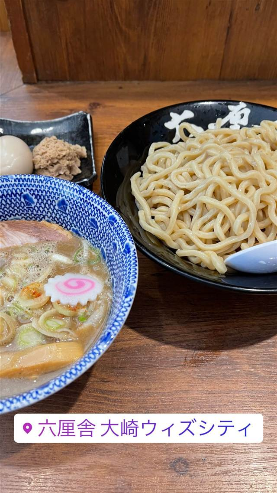

ラーメン · つけ麺 · 大崎
六厘舎 大崎店
5時間待ちを生んだ伝説の濃厚豚骨魚介つけ麺
六厘舎 大崎ウィズシティ
2005年創業、5時間待ちの行列で一世を風靡した伝説のつけ麺店。豚骨・鶏ガラ・魚介の超濃厚スープと極太麺の組み合わせは後続店の基準になったとも言われる。大崎店は創業の地に立つ店舗で、東京駅や空港にも展開する人気チェーンの一角。
TRIVIA
豆知識
- 「超濃厚豚骨魚介スープ＋極太麺」という組み合わせは、後続の多くのつけ麺店の事実上の標準になったと言われる
- 大崎店は創業の地・大崎に2014年に戻ってきた店舗
- 弟ブランド「舎鈴」は首都圏を中心に数十店舗を展開
REVIEWS
世間の評判
92.9ラーメンDB3.66食べログ
濃厚魚介豚骨と選べる変わりダレ
- 濃厚な魚介豚骨のつけ汁とボリュームのある太麺を評価する声が多い
- 麻辣酢や生七味など変わりダレのバリエーションを楽しむ人がいる
- 大崎店ならではのオリジナル辛味噌がなくなったのを残念がる声がある
- 回転が速く行列ができていてもあまり待たずに入れるという声が多い
ラーメンデータベース 口コミ233件・総合926位・最新 2026-09
| 創業 | 2005年、大崎で創業（大崎店は2014年4月に創業の地へ再出店） |
|---|---|
| 系譜 | つけ麺ブームを牽引した名店。弟ブランドに「舎鈴」、系列に「東京タンメントナリ」がある |
| 看板 | 濃厚豚骨魚介つけ麺 |
| こだわり | 豚骨・鶏ガラ・魚介をじっくり炊いた超濃厚スープと、それに負けない極太麺の組み合わせ |
| 掲載・評価 | 開店当初5時間待ちの行列で話題になった伝説のつけ麺店。東京駅ラーメンストリート・スカイツリー・羽田空港にも出店 |
| どこから | 都心 |
| 行くなら | 行列 |
| 営業時間 | 月〜金 10:30-23:00 土・日 10:30-22:30 |
| 予算 | 昼 ～¥999 夜 ～¥999 |
| 定休日 | 無休 |
| 予約 | 予約不可 |
| 場所 | 大崎駅 東京都品川区大崎 大崎ウィズシティ1F |
| メモ | 大崎駅から徒歩4分、大崎ウィズシティ1階 |
食べたもの：つけ麺
ひとりで入りやすい
OFFICIAL
店からの知らせ
その日の限定や臨時の休みは、店のXに出ます。
NEARBY
近い店・同じ系統の店
-
 ★
つけ麺 新小岩
麺屋 一燈
フレンチ出身の店主が42歳で始めた濃厚魚介豚骨つけ麺
昼 ¥1,000～¥1,999 夜 ¥1,000～¥1,999
★
つけ麺 新小岩
麺屋 一燈
フレンチ出身の店主が42歳で始めた濃厚魚介豚骨つけ麺
昼 ¥1,000～¥1,999 夜 ¥1,000～¥1,999
-
 ★
つけ麺 東十条
燦燦斗（さんさんと）
1日2時間半だけの営業、寺子屋仕込みのつけ麺
夜 ～¥999
★
つけ麺 東十条
燦燦斗（さんさんと）
1日2時間半だけの営業、寺子屋仕込みのつけ麺
夜 ～¥999
-
 ★
つけ麺 神田
三馬路 東京店（サンマロ）
博多祇園の名店をルーツに持つ、百名店選出の淡麗塩そば
夜 ¥1,000～¥1,999
★
つけ麺 神田
三馬路 東京店（サンマロ）
博多祇園の名店をルーツに持つ、百名店選出の淡麗塩そば
夜 ¥1,000～¥1,999
-
 ★
つけ麺 青葉台駅
らぁ麺 すぎ本
ラーメンの鬼、最後の弟子が作る自家製麺のつけ麺
昼 ¥1,000～¥1,999 夜 ¥1,000～¥1,999
★
つけ麺 青葉台駅
らぁ麺 すぎ本
ラーメンの鬼、最後の弟子が作る自家製麺のつけ麺
昼 ¥1,000～¥1,999 夜 ¥1,000～¥1,999
-
 ★
つけ麺 地下鉄成増
中華そば べんてん
べんてん-とし岡系という系譜を生んだ源流店とされる中華そば
昼 ¥1,000～¥1,999
★
つけ麺 地下鉄成増
中華そば べんてん
べんてん-とし岡系という系譜を生んだ源流店とされる中華そば
昼 ¥1,000～¥1,999
-
 ★
つけ麺 王子
キング製麺
ビブグルマン店の系列、白だしと山椒から選べる2種のスープ
昼 ¥1,000～¥1,999 夜 ¥1,000～¥1,999
★
つけ麺 王子
キング製麺
ビブグルマン店の系列、白だしと山椒から選べる2種のスープ
昼 ¥1,000～¥1,999 夜 ¥1,000～¥1,999
ONSEN & SAUNA